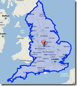

GeoJSON Where are You?
- date:
2010-05-21 15:02
- author:
admin
- category:
python, web development
- tags:
cloudmade, geojson
- slug:
geojson-where-are-you
- status:
published
I was looking around the web to try and find some services that returned GeoJSON to try out Shapely. It was surprisingly hard to find servers or web services given the amount of tools that have already been built to use GeoJSON.
Eventually I found the CloudMade’s geocoding developer samples. CloudMade is a company that builds tools and services on top of OpenStreetMap. Even though many of the people involved in both CloudMade and OSM are the same, using the two brands interchangeably has not been without controversy.
Once you’ve signed up for a free account, you can then register for an API key that allows you to call their web services. See here for differences between free and paid accounts. The service I was interested in testing was the geocoding service that returns GeoJSON.
Depending on the type of feature you are looking for you can get different geometry types ?” the standard point, lines, and polygons, all as GeoJSON objects.
The API uses URLs and GET requests to return data. Calls can be made to either a find.html page which returns the GeoJSON object displayed on a map, as shown in the query for “england” on the left. Alternatively the query can be made to find.geojs to return just the GeoJSON itself. There is also a find.js which can be used to return geometry as JSON, although this seems a little confusing - even more so as the coordinate order is reversed from the standard GeoJSON [lon,lat].
The API can be used in several languages (Ruby, Perl, PHP etc.), my current choice is Python, and the CloudMade Python API documentation is available online here. Retreiving GeoJSON however is easy enough even without this API. For example in Python use:
[python]import urllib2
‘%s/%s/geocoding/v2/find.geojs?query=%s&return_geometry=true’ \ | % (root,apikey,query)
json = urllib2.urlopen(url).read()
print json[/python]
Now that I have a source GeoJSON I can start to use some of the more interesting tools to analyse and manipulate these features.
- orphan:
Comments
1. Rob **
Seth -
Thanks for this post - just what I needed this morning!
ATB
Rob
ReplyAdd Comment